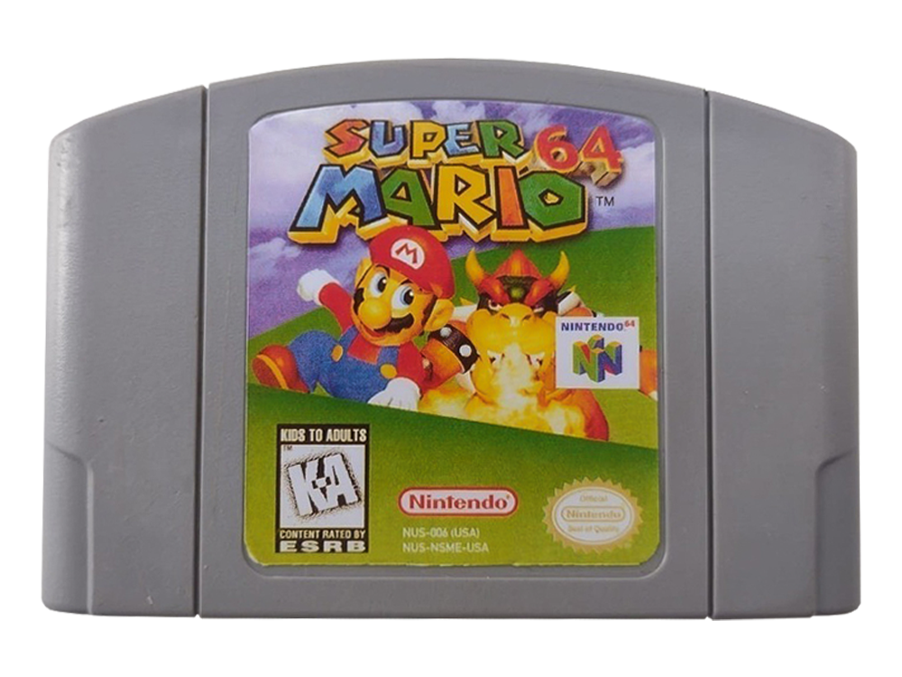
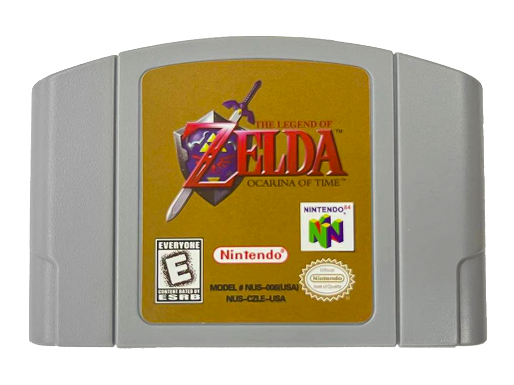
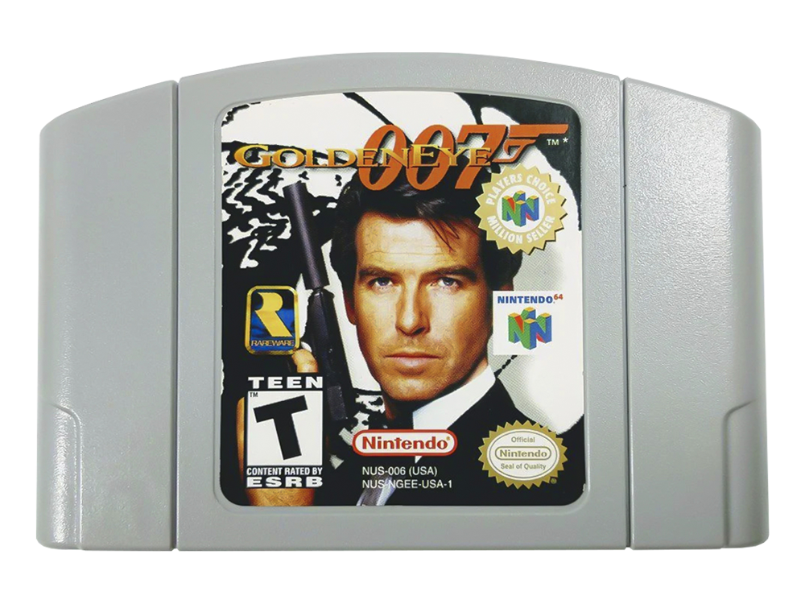
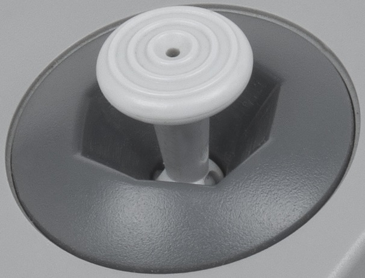
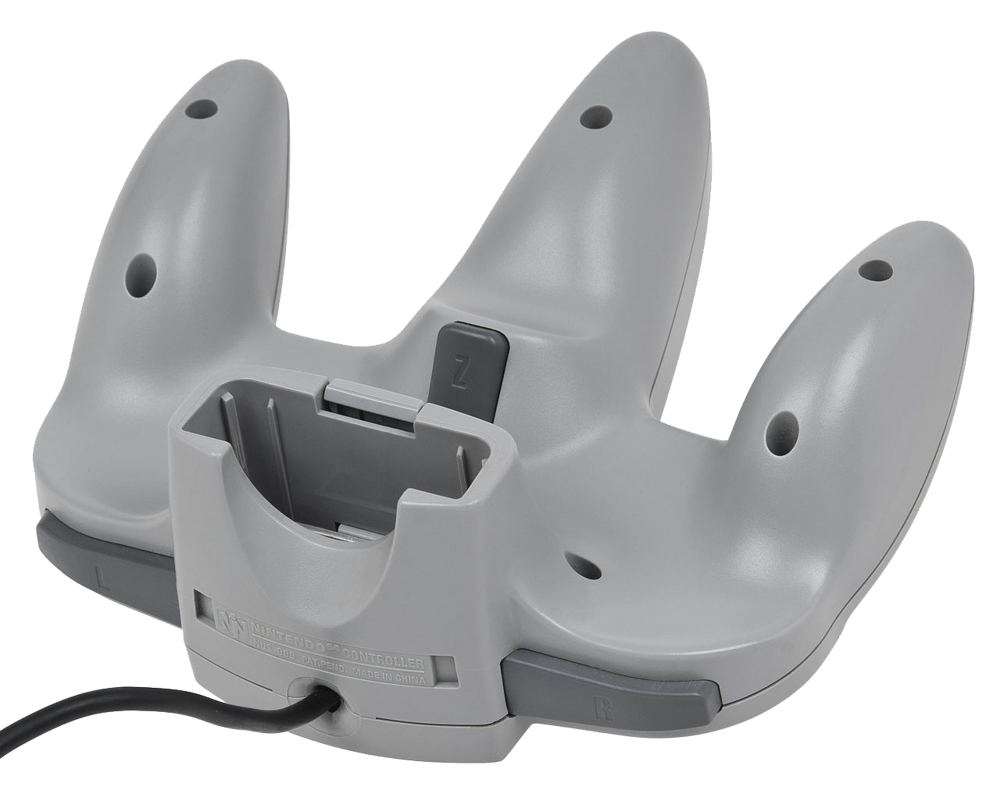

Contexto e História
O Nintendo 64, muitas vezes abreviado como N64, é um console de videogame lançado pela Nintendo em 1996 no Japão e nos anos seguintes em outros países. Este console icônico marcou uma era na história dos videogames, sendo o sucessor do popular Nintendo Entertainment System (SNES). Lançado como a quinta geração de consoles da Nintendo, foi uma revolução no mercado da época, graças à sua arquitetura de 64 bits, que permitiu introduzir 3D nos jogos, tornando-os mais imersíveis.
Foi anunciado em 1993 com o codename "Project Reality", com plano de lançamento para arcades em 1994 e uma versão doméstica no ano seguinte. Em 1995, fora primeiro apresentado com o nome Nintendo Ultra 64, tendo o nome reduzido para Nintendo 64 em fevereiro de 1996 (5 meses antes do lançamento). Seu código de modelo é NUS-001 (cuja sigla significa Ultra Sixty Four - o codinome do projeto).
Em sua estreia, haviam três jogos disponíveis: Super Mario 64, PilotWings 64 e Saikyou Habu Shogi. Nos EUA e no Brasil, o lançamento ocorreu simultaneamente em 29 de setembro de 1996. Nos dois países, apenas dois jogos estavam disponíveis: Super Mario 64 e PilotWings 64. Contudo, nos EUA, os jogos eram vendidos separadamente, enquanto no Brasil, o console vinha com o cartucho de Super Mario 64 incluso. Na Europa, lançado em 1 de março de 1997, o console estreou com sete jogos: além de Super Mario 64 e PilotWings, incluía Wayne Gretzky's 3D Hockey, Cruis'n USA, Star Wars: Shadows of the Empire, FIFA Soccer 64 e Turok: Dinosaur Hunter.
O N64 possuía um hardware complexo, o que tinha um preço: os programadores afirmavam que era um grande desafio manter todos os processadores da máquina trabalhando em sincronia.
Vale citar que o Nintendo 64 foi o último grande console doméstico a utilizar cartucho até o Nintendo Switch, lançado em 2017.
Os Jogos que Marcaram Gerações
Foram desenvolvidos 388 jogos para o Nintendo 64, alguns dos quais foram exclusivos no Japão ou na Europa.
Apesar de ter recebido menos jogos do que seus concorrentes, como o PlayStation com cerca de 1100 títulos e o Sega Saturn com aproximadamente 600, e até menos do que os consoles anteriores da Nintendo, como o SNES com cerca de 725 e o NES com aproximadamente 768, o Nintendo 64 se destaca por uma seleção notável de jogos aclamados pela crítica e com alto volume de vendas. Super Mario 64 foi o título mais vendido da geração, alcançando aproximadamente 11 milhões de cópias vendidas, superando "Final Fantasy VII" (9.72 milhões) e "Gran Turismo" (10.85 milhões), ambos do PlayStation. Recebendo elogios da crítica, estabeleceu um novo padrão para jogos de plataforma em 3D. GoldenEye 007 foi crucial na evolução dos jogos de tiro em primeira pessoa, considerado um dos melhores do gênero. E The Legend of Zelda: Ocarina of Time definiu o padrão para jogos de ação/aventura em 3D, tornando-se um marco na indústria dos videogames.
Características do Console
Hardware Interno
O Nintendo 64 foi equipado com um processador central de 64 bits, o que representou um avanço significativo em relação aos consoles anteriores. Seu processador, o MIPS R4300i, funcionava a 93,75 MHz e oferecia uma performance notável para a época. Além disso, possuía 4MB de RAM e 8MB de memória de armazenamento.
Cartucho
O sistema de cartuchos do Nintendo 64 era uma das características mais distintas do console. Embora oferecesse menor capacidade de armazenamento se comparado aos CDs utilizados por outros consoles da época, os cartuchos proporcionavam tempos de carregamento extremamente rápidos. Isso permitia uma experiência de jogo mais fluida, com transições praticamente instantâneas entre as áreas dos jogos.
Foi o último console caseiro a adotar cartuchos de memória ROM, enquanto seus concorrentes optaram por CD-ROMs. Os cartuchos ofereciam vantagens como acesso rápido devido às altas taxas de transferência de dados, durabilidade e segurança.
Uma das grandes vantagens técnicas dos cartuchos era a capacidade de incorporar co-processadores, funções específicas ou códigos personalizados diretamente no próprio cartucho. No entanto, os custos de produção dos cartuchos eram mais elevados em comparação aos CD-ROMs e tinham menor capacidade de armazenamento. Isso limitava a inclusão de arquivos de áudio e vídeos pré-gravados nos jogos.

Super Mario 64

The Legend Of Zelda: Ocarina of Time

007 Goldeneye
Joystick Revolucionário
O controle do Nintendo 64, conhecido como Nintendo 64 Controller ou N64 Controller, foi um marco na indústria dos videogames. Sua característica mais notável era o joystick analógico, uma novidade na época. Além do stick, o controle apresentava um direcional digital, botões A e B, gatilhos L e R e um botão Start.

Joystick Analógico - O Nintendo 64 foi o primeiro sistema a utilizar uma alavanca analógica em seu controle. A alavanca analógica é superior a um direcional digital pros jogos em terçeira dimensão (aquele em formato de cruz, mas mesmo assim não foi descartado no controle do Nintendo 64) por que com ela se pode aplicar uma intensidade diferente ao movimento (empurrando-a só um pouco ou até o fim, dependendo do tipo de movimento que se quer que o jogo entenda, como acontece no Super Mario 64: inclinando a alavanca levemente, Mario anda, e quando inclina no máximo, Mario corre), e ainda por não ser limitada somente às oito direções que o direcional digital é capaz de apontar. Hoje em dia todos os controles de videogames caseiros utilizam essa tecnologia (o PlayStation e o Sega Saturn tiveram de lançar controles com alavancas posteriormente), que foi apresentada ao mundo nesse joystick.

Gatilho Z - O Botão Z, que fica na parte traseira central do controle e é pressionado com o dedo indicador, é utilizado como gatilho. Para jogos de tiro em primeira pessoa (como GoldenEye 007) esse botão dá a impressão de ser um gatilho de arma de fogo, proporcionando uma sensação mais realista. Hoje em dia a maioria dos controles de videogame possui uma função parecida com essa.
Rumble Pak - Esse acessório, como descrito acima, vibra de acordo com os acontecimentos mostrados na tela do jogo, dando uma sensação de interatividade com o que está sendo visto, Essa é outra função amplamente utilizada nos jogos atuais (o segundo controle do PlayStation, o DualShock, já possuía a função) e que começou no Nintendo 64.
Outras características
O console suportava até quatro controladores simultâneos, possibilitando experiências multiplayer local memoráveis. Além disso, o Nintendo 64 tinha uma entrada de cartucho na parte superior, onde jogos como "Donkey Kong 64" vinham com um Expansor de Memória necessário para rodar o jogo, ampliando a capacidade do console.
Essas características, somadas ao hardware inovador, ao sistema de cartuchos e ao joystick revolucionário, contribuíram significativamente para a identidade do Nintendo 64 e moldaram a experiência de jogo oferecida pelo console.
O Nintendo 64 não apenas deixou sua marca na história dos videogames, mas também influenciou gerações de jogadores e desenvolvedores. Sua capacidade de inovar na jogabilidade, os jogos lendários que ofereceu e a maneira como estabeleceu novos padrões na indústria são apenas algumas das razões pelas quais ele é lembrado como um dos consoles mais revolucionários de todos os tempos. Sua influência continua sendo sentida na cultura dos videogames até os dias de hoje.